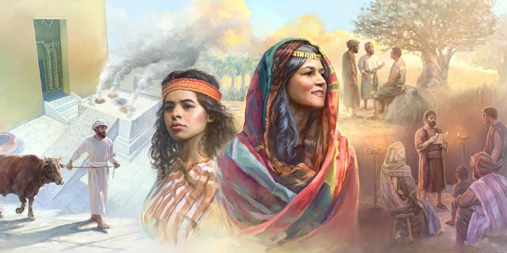

அடிமைகள் அல்ல, மகன்கள் — சுதந்திரப் பெண்ணின் பிள்ளைகள்
குறித்த காலத்தில் கடவுள் தன் மகனை அனுப்பி, திருச்சட்டத்தின்கீழ் இருந்தவர்களை விடுவித்து மகன்களாகத் தத்தெடுத்தார். அப்படியிருக்க, மறுபடியும் அடிமைத்தனத்துக்கு ஏன் திரும்ப வேண்டும்? — ஒரு அப்பாவின் உருக்கத்தோடு பவுல் கேட்கிறார்.
ஒரே வரியில்யெகோவா சரியான நேரத்தில் தன் மகனை அனுப்பி, அடிமைகளை அன்புள்ள மகன்களாக்கினார். அந்தச் சுதந்திரத்தை விட்டு மறுபடியும் அடிமைத்தனத்துக்குத் திரும்புவது முட்டாள்தனம்.
5 நிமிட சுருக்கம்
அதிகாரம் 3-ல் பவுல், திருச்சட்டம் கிறிஸ்து வரும்வரை ஒரு “பாதுகாவலர்” போல இருந்தது என்றும், விசுவாசத்தால் நாம் கடவுளுடைய மகன்களாக ஆகிறோம் என்றும் சொன்னார். அதே கருத்தை இப்போது ஒரு குடும்ப உதாரணத்தோடு தொடர்கிறார்: ஒரு பணக்காரருடைய வாரிசு சின்னப் பிள்ளையாக இருக்கும்வரை, எல்லாச் சொத்துக்கும் உரிமையாளனாக இருந்தாலும், அடிமையைப் போலத்தான் — அப்பா குறித்த நாள் வரும்வரை மேற்பார்வையாளர்களுக்குக் கீழ்ப்பட்டிருப்பான். w08 3/1 21
“குறித்த காலம்” வந்தபோது, கடவுள் தன் மகனை அனுப்பினார். அவர் ஒரு பெண்ணிடம் பிறந்தார், திருச்சட்டத்துக்குக் கீழ்ப்பட்டிருந்தார். திருச்சட்டத்தின்கீழ் இருந்தவர்களை விலைகொடுத்து மீட்டு, நம்மை மகன்களாகத் தத்தெடுக்கவே அப்படிச் செய்தார். இப்போது கடவுளுடைய சக்தி இதயங்களில் “அபா, தகப்பனே!” என்று கூப்பிடுகிறது. இனி அடிமைகள் அல்ல — மகன்கள், வாரிசுகள். nwtsty 4:4-6
அப்படியிருக்க, “பலவீனமாகவும் வெறுமையாகவும் இருக்கிற அடிப்படைக் காரியங்களுக்கு” ஏன் திரும்புகிறீர்கள்? நாட்கள், மாதங்கள், காலங்கள், வருஷங்கள் — திருச்சட்டப் பண்டிகைகளை — நுணுக்கமாக அனுசரிக்கிறீர்களே! என்று பவுல் கவலைப்படுகிறார்.
பிறகு மனம் திறந்து பேசுகிறார்: “உடல்நலம் சரியில்லாமல் நான் உங்களிடம் வந்தபோது, என்னைக் கடவுளுடைய தூதரைப் போல ஏற்றுக்கொண்டீர்கள்; முடிந்தால் உங்கள் கண்களையே பிடுங்கிக் கொடுத்திருப்பீர்கள். இப்போது உண்மையைச் சொல்வதால் உங்களுக்கு எதிரியாகிவிட்டேனா? என் சின்னப் பிள்ளைகளே, கிறிஸ்து உங்களுக்குள் உருவாகும்வரை மறுபடியும் பிரசவ வேதனைப்படுகிறேன்.”
கடைசியாக, திருச்சட்டத்தையே ஆதாரமாக வைத்து ஓர் “அடையாள அர்த்தத்தை” விளக்குகிறார்: ஆபிரகாமுக்கு இரண்டு மகன்கள் — அடிமைப் பெண் ஆகாரிடம் இஸ்மவேல், சுதந்திரப் பெண் சாராளிடம் ஈசாக்கு. இந்த இரண்டு பெண்களும் இரண்டு ஒப்பந்தங்களைக் குறிக்கிறார்கள்: சீனாய் மலையில் செய்யப்பட்ட திருச்சட்ட ஒப்பந்தம் (ஆகார்), ஆபிரகாமோடு செய்த ஒப்பந்தம் (சாராள்). அன்றைய எருசலேம் அடிமையாக இருக்கிறாள்; “மேலான எருசலேம்” சுதந்திரமானவள், அவள்தான் நமக்குத் தாய். ஆகவே — “நாம் அடிமைப் பெண்ணின் பிள்ளைகள் அல்ல, சுதந்திரப் பெண்ணின் பிள்ளைகள்.” w26.06 31
முக்கியக் குறிப்புகள்
01
வாரிசு — ஆனால் இன்னும் சின்னப் பிள்ளை
அப்பா குறித்த நாள் வரும்வரை வாரிசு மேற்பார்வையாளர்களுக்குக் கீழே (4:1, 2). திருச்சட்டத்தின்கீழ் இருந்த யூதர்களும் அப்படித்தான்.
02
“குறித்த காலம்”
மேசியா வரும் நேரத்தை யெகோவா முன்பே குறித்திருந்தார் (4:4; தானி 9:25). கி.பி. 29-ல் இயேசு அபிஷேகம் செய்யப்பட்டார்.
பிள்ளை தன் அப்பாவைச் செல்லமாகவும் மரியாதையாகவும் கூப்பிடும் வார்த்தை. தத்தெடுக்கப்பட்டால் தவிர, அடிமை தன் எஜமானை இப்படிக் கூப்பிட முடியாது (4:6). nwtsty 4:6
05
பின்னோக்கிப் போக வேண்டாம்
திருச்சட்டப் பண்டிகைகள் உட்பட, “பலவீனமான, வெறுமையான அடிப்படைக் காரியங்களுக்கு” ஏன் அடிமையாக வேண்டும்? (4:9, 10)
06
உண்மை சொல்லும் நண்பன்
“உண்மையைச் சொல்வதால் உங்களுக்கு எதிரியாகிவிட்டேனா?” (4:16) — பவுல் ஒரு அம்மாவைப் போல உருகுகிறார் (4:19).
07
இரண்டு பெண்கள், இரண்டு ஒப்பந்தங்கள்
ஆகார் = திருச்சட்ட ஒப்பந்தம் → அடிமைத்தனம். சாராள் = ஆபிரகாமோடு செய்த ஒப்பந்தம் → சுதந்திரம் (4:24; w26.06 புதிய விளக்கம்).
08
“மேலான எருசலேம் … நமக்குத் தாய்”
ஆவி சிருஷ்டிகள் அடங்கிய யெகோவாவின் பரலோக அமைப்பு — அவருடைய அடையாள “மனைவி” (4:26, 27; ஏசா 54:1).
எப்படிப் படிக்கலாம்?இந்த அதிகாரத்தின் கடைசிப் பகுதி (21–31) ஒரு “அடையாள அர்த்தம்.” முதலில் கதை பகுதியில் உள்ள ஒப்பீட்டு அட்டவணையைப் பாருங்கள்; பிறகு இடது பக்கத்தில் வசனங்களை வாசியுங்கள்.
தொடர்ச்சி · 3:23–29அதிகாரம் 4 எங்கிருந்து ஆரம்பிக்கிறது?
அதிகாரம் 3-ன் முடிவில் பவுல் இரண்டு விஷயங்களைச் சொல்லியிருந்தார்: (1) கிறிஸ்து வரும்வரை திருச்சட்டம் ஒரு “பாதுகாவலரை” போல இருந்தது (3:24, 25). (2) இப்போது விசுவாசத்தால் நீங்கள் “கடவுளுடைய மகன்கள்,” “ஆபிரகாமின் சந்ததி,” “வாரிசுகள்” (3:26, 29). அதிகாரம் 4 அந்த “வாரிசு” என்ற வார்த்தையை எடுத்துக்கொண்டு, அதை ஒரு குடும்பக் காட்சியாக விளக்குகிறது.
4:1-3சொத்துக்கே உரிமையாளன் — ஆனால் அடிமையைப் போல! எப்படி?
பவுல் சொல்வது: “வாரிசு எல்லாவற்றுக்கும் எஜமானாக இருந்தாலும், சின்னப் பிள்ளையாக இருக்கும்வரை அவனுக்கும் அடிமைக்கும் எந்த வித்தியாசமும் இல்லை. அப்பா குறித்திருக்கும் நாள் வரும்வரை மேற்பார்வையாளர்களுக்கும் வீட்டு நிர்வாகிகளுக்கும் கீழ்ப்பட்டிருப்பான். அதேபோல், நாமும் குழந்தைகளாக இருந்தபோது இந்த உலகத்தின் அடிப்படைக் காரியங்களுக்கு அடிமையாக இருந்தோம்.”
அன்றைய வழக்கம்: பவுலின் காலத்தில் இது எல்லாருக்கும் தெரிந்த ஏற்பாடு. ரோம சட்டப்படி, சிறு வயது வாரிசுக்கு ஒரு “மேற்பார்வையாளர்” சட்டப்பூர்வமாக நியமிக்கப்படுவார்; அவர் அந்தப் பிள்ளையின் பண விஷயங்களை நிர்வகிப்பார். “வீட்டு நிர்வாகி” முழு வீட்டின் சொத்து விஷயங்களையும் கவனிப்பார். காகிதத்தில் சொத்து அந்தப் பிள்ளையுடையது; ஆனால் அதன்மேல் அடிமையைவிட அதிக உரிமை அவனுக்கு இல்லை. யூத சரித்திராசிரியர் ஜொசிஃபஸ் ஓர் உதாரணம் சொல்கிறார்: இர்க்கானஸ் என்ற இளைஞன், தனக்குத் தேவையானதை வாங்க பணம் தரும்படி தன் நிர்வாகிக்குக் கடிதம் எழுதித் தரச் சொல்லி அப்பாவிடம் கேட்டானாம்.
ஏன் இந்த உதாரணம்: திருச்சட்டத்தின்கீழ் இருந்த யூதர்கள் அந்தச் சின்ன வாரிசைப் போல இருந்தார்கள் — வாக்குறுதிகள் அவர்களுக்கு இருந்தன; ஆனால் “அப்பா குறித்த நாள்” வரும்வரை கட்டுப்பாட்டில் இருந்தார்கள். அந்த நாள் வந்தபிறகும் மேற்பார்வையாளரின் கீழேயே இருக்க ஆசைப்படுவது, வளர்ந்த மகன் “நான் இன்னும் குழந்தைதான்” என்று சொல்வது போல!
பவுல் சொல்வது: “குறித்த காலம் வந்தபோது, கடவுள் தன் மகனை அனுப்பினார். அவர் ஒரு பெண்ணிடம் பிறந்து திருச்சட்டத்துக்குக் கீழ்ப்பட்டிருந்தார். திருச்சட்டத்தின்கீழ் இருப்பவர்களை விலைகொடுத்து மீட்கவும், நம்மை மகன்களாகத் தத்தெடுக்கவும்தான் அனுப்பினார்.”
“குறித்த காலம்” — நேரடி அர்த்தம் “காலத்தின் நிறைவு.” மேசியா வரும் நேரத்தை யெகோவா முன்பே தீர்மானித்திருந்தார் (ஆதி 3:15; 49:10). அதை முன்பே சொல்லியும் இருந்தார்: “எருசலேமைத் திரும்பக் கட்டும் கட்டளை” முதல் மேசியா வரும்வரை 69 “வாரங்கள்” (தானி 9:24, 25) — அதாவது 483 வருஷங்கள். அது கி.மு. 455-ல் நெகேமியாவுக்கு அனுமதி கொடுக்கப்பட்டபோது ஆரம்பித்து, கி.பி. 29-ல் இயேசு ஞானஸ்நானம் எடுத்து அபிஷேகம் செய்யப்பட்டபோது முடிந்தது. அதனால்தான் அந்தச் சமயத்தில் மக்கள் “மேசியாவை எதிர்பார்த்துக்கொண்டிருந்தார்கள்” (லூக் 3:15).
“பெண்ணிடம் பிறந்து” — கி.மு. 2-ல் கன்னிப் பெண் மரியாளிடம் பிறந்தார்; உண்மையான மனிதனாக இருந்தார் (யோவா 1:14). “திருச்சட்டத்துக்குக் கீழ்ப்பட்டிருந்தார்” — யூதனாகப் பிறந்ததால் திருச்சட்டத்தை முழுமையாகக் கடைப்பிடித்தார் (மத் 5:17; லூக் 2:21-23). அவருடைய மரணத்துக்குப் பிறகுதான் திருச்சட்டம் முடிவுக்கு வந்தது (ரோ 10:4).
ஏன் இது முக்கியம்: திருச்சட்டத்தின்கீழ் இருந்தவர்களை மீட்க, மீட்பவரும் அதே சட்டத்தின்கீழ் இருந்து, அதை முழுமையாகக் கடைப்பிடித்திருக்க வேண்டும். “விலைகொடுத்து மீட்பது” என்ற அதே கிரேக்கச் சொல் 3:13-லும் வருகிறது — கிறிஸ்து நமக்குப் பதிலாகச் சாபமானார்.
கவனிக்ககாலக்கணக்கு மக்கள் மேசியாவை எதிர்பார்க்க உதவியது; ஆனால் இயேசுவே மேசியா என்று நிரூபித்தது அவருடைய பிரசங்கமும் அற்புதங்களும் செயல்களும்தான் (யோவா 5:36). w98 9/15 14
யெகோவா ஒருபோதும் தாமதிப்பதில்லை, அவசரப்படுவதும் இல்லை. அவருடைய வாக்குறுதிகள் நிறைவேறுவதற்காக நான் பொறுமையாகக் காத்திருக்கிறேனா?
4:6-7“அபா, தகப்பனே!” — இந்த வார்த்தையில் என்ன விசேஷம்?
பவுல் சொல்வது: “நீங்கள் மகன்களாக இருப்பதால், கடவுள் தன் மகனுக்குக் கொடுத்த சக்தியை நம் இதயங்களுக்குள் அனுப்பியிருக்கிறார். அது ‘அபா, தகப்பனே!’ என்று கூப்பிடுகிறது. இனி நீங்கள் அடிமைகள் அல்ல, மகன்கள்; மகன்கள் என்றால் வாரிசுகளும்கூட.”
“அபா” என்பது “அப்பா” என்று அர்த்தம் தரும் எபிரெய அல்லது அரமேயிக் வார்த்தை. பிள்ளை தன் அப்பாவை செல்லமாகவும், அதேசமயம் மரியாதையாகவும் கூப்பிடும் வார்த்தை; பிள்ளை முதலில் கற்றுக்கொள்ளும் வார்த்தைகளில் ஒன்று. பைபிளில் மூன்று இடங்களில் மட்டுமே வருகிறது: கெத்செமனேயில் இயேசு (மாற் 14:36), ரோ 8:15, இங்கே. ஒவ்வொரு முறையும் உடனே “தகப்பனே” என்று கிரேக்கிலும் வருகிறது.
ஏன் இது பவுலின் வாதத்துக்கு முக்கியம்: ஒரு அடிமை தன் எஜமானை “அப்பா” என்று கூப்பிட முடியாது — தத்தெடுக்கப்பட்டால் மட்டுமே முடியும். அபிஷேகம் செய்யப்பட்ட கிறிஸ்தவர்கள் “கடவுளுக்கு அடிமைகள்”தான் (ரோ 6:22); ஆனாலும் அன்பான தகப்பனுடைய வீட்டில் மகன்கள். அந்த உறவைக் கடவுளுடைய சக்தியே அவர்களுக்கு உறுதிப்படுத்துகிறது. அப்படிப்பட்டவர்கள் திருச்சட்டத்தின் அடிமைத்தனத்துக்குத் திரும்புவது எவ்வளவு முரண்பாடு!
நான் ஜெபிக்கும்போது, ஒரு தூரத்து அதிகாரியிடம் பேசுவது போலவா, அன்பான அப்பாவிடம் பேசுவது போலவா பேசுகிறேன்?
4:8-11“ஏன் திரும்பிப்போகிறீர்கள்?” — கலாத்தியர்கள் என்ன செய்துகொண்டிருந்தார்கள்?
பவுல் சொல்வது: “கடவுளைத் தெரியாதபோது, கடவுளாக இல்லாதவற்றுக்கு அடிமைகளாக இருந்தீர்கள். இப்போது உங்களுக்குக் கடவுளைத் தெரியும் — சொல்லப்போனால், கடவுளுக்கு உங்களைத் தெரியும். அப்படியிருக்க, பலவீனமாகவும் வெறுமையாகவும் இருக்கிற அடிப்படைக் காரியங்களுக்கு ஏன் திரும்புகிறீர்கள்? நாட்களையும் மாதங்களையும் காலங்களையும் வருஷங்களையும் நுணுக்கமாக அனுசரிக்கிறீர்களே. நான் பட்டபாடு வீணாகிவிட்டதோ என்று பயப்படுகிறேன்.”
அவர்கள் அனுசரித்தவை: திருச்சட்டம் கட்டளையிட்ட விசேஷ நாட்கள் — ஓய்வுநாட்கள், ஓய்வு வருஷங்கள், அமாவாசை நாட்கள், பாவப் பரிகார நாள், பஸ்கா, புளிப்பில்லாத ரொட்டிப் பண்டிகை, வாரங்களின் பண்டிகை, கூடாரப் பண்டிகை. இங்கே “காலங்கள்” என்பது தட்பவெப்பக் காலங்கள் அல்ல, பண்டிகைக் காலங்கள்.
இரண்டு வகை ஆட்களுக்கும் ஒரே ஆபத்து: சபையில் யூத பின்னணியிலிருந்து வந்தவர்கள், பல வருஷங்கள் இவற்றை உண்மையோடு கடைப்பிடித்திருந்தார்கள்; கிறிஸ்துவின் மீட்புவிலையைப் பற்றித் தெரிந்துகொண்டதும் சந்தோஷமாக விடுதலை பெற்றார்கள் (அப் 13:38, 39). மற்ற தேசத்து மக்கள் முன்பு பொய் தெய்வங்களுக்கு அடிமையாக இருந்தார்கள் (4:8). இப்போது யூதக் கிறிஸ்தவர்கள் திருச்சட்டப் பண்டிகைகளுக்குத் திரும்பினாலும், மற்றவர்கள் தங்கள் பழைய மதச் சடங்குகளுக்குத் திரும்பினாலும் — இரண்டுமே கிறிஸ்துவின் மீட்புவிலையில் விசுவாசம் இல்லை என்பதைத்தான் காட்டும்.
“கடவுளுக்கு உங்களைத் தெரியும்” — கடவுளைத் “தெரிந்துகொள்வது” என்பது சில தகவல்களைத் தெரிந்துகொள்வது மட்டுமல்ல, அவரோடு நெருக்கமான பந்தம். அவருக்கு நம்மைத் “தெரிந்திருப்பது” என்றால், அவர் நம்மை ஏற்றுக்கொண்டிருக்கிறார். அந்த அங்கீகாரத்தைவிடப் பெரியது எதுவும் இல்லை.
சத்தியத்துக்காக நான் விட்டுவந்த “வாய்ப்புகளை” நினைத்து ஏங்குகிறேனா? அவை உண்மையில் “வெறுமையானவை” அல்லவா?
4:12-16“உங்கள் கண்களையே எனக்குக் கொடுத்திருப்பீர்களே” — பவுல் ஏன் பழைய நினைவுகளைச் சொல்கிறார்?
பவுல் சொல்வது: “சகோதரர்களே, ஒருகாலத்தில் நானும் உங்களைப் போல இருந்தேன்; நீங்களும் இப்போது என்னைப் போல ஆகுங்கள். நீங்கள் எனக்கு எந்த அநியாயமும் செய்யவில்லை. உடல்நிலை சரியில்லாமல் போனதால்தான் முதன்முதலில் உங்களுக்கு நல்ல செய்தியை அறிவிக்கும் வாய்ப்பு கிடைத்தது. என் உடல்நலக் குறைவு உங்களுக்கு ஒரு சோதனையாக இருந்தும், நீங்கள் என்னை அவமதிக்கவோ அருவருக்கவோ இல்லை; கடவுளுடைய தூதரைப் போல, கிறிஸ்து இயேசுவைப் போல ஏற்றுக்கொண்டீர்கள். அந்தச் சந்தோஷம் இப்போது எங்கே? முடிந்தால் உங்கள் கண்களையே பிடுங்கி எனக்குக் கொடுத்திருப்பீர்களே! உண்மையைச் சொல்வதால் இப்போது உங்களுக்கு எதிரியாகிவிட்டேனா?”
அந்த நோய் என்ன? பைபிள் சொல்லவில்லை. ஆனால் அது கண் சம்பந்தப்பட்ட பிரச்சினையாக இருந்திருக்கலாம் என்று பிரசுரங்கள் சொல்கின்றன: “கண்களைப் பிடுங்கிக் கொடுத்திருப்பீர்கள்” (4:15); “எவ்வளவு பெரிய எழுத்துக்களில் எழுதியிருக்கிறேன்” (6:11); தலைமைக் குருவை அடையாளம் கண்டுகொள்ளாதது (அப் 23:2-5); “உடலில் ஒரு முள்” (2கொ 12:7-9). “கண்களைப் பிடுங்கிக் கொடுப்பது” அன்று பொதுவாகப் பயன்படுத்தப்பட்ட ஒரு அணிநடை — “எதையும் தியாகம் செய்வோம்” என்ற அர்த்தம்; பவுலுக்குக் கண் பிரச்சினை இருந்திருந்தால் அது இன்னும் பொருத்தமாக இருந்திருக்கும்.
“முதன்முதலில்” — முதல் மிஷனரி பயணத்தில் (சுமார் கி.பி. 47-48), பெர்கேயிலிருந்து கடல் மட்டத்திலிருந்து சுமார் 3,600 அடி உயரத்திலிருந்த பிசீதியாவின் அந்தியோகியாவுக்கு அவர்கள் போனார்கள்; அந்தச் சமயத்தில் பவுலுக்கு உடல்நலம் சரியில்லாமல் போயிருக்கலாம் என்று bt புத்தகம் சொல்கிறது. “முதன்முதலில்” என்ற வார்த்தை, இந்தக் கடிதத்துக்கு முன் அவர் குறைந்தது இரண்டு முறை அங்கே போயிருந்தார் என்பதைக் காட்டுகிறது (அப் 16:1-5).
ஏன் இதைச் சொல்கிறார்: அவர்களுடைய பழைய அன்பை ஞாபகப்படுத்துகிறார். “நீங்கள் மாறிவிட்டீர்கள், நான் மாறவில்லை. அன்று என்னை தேவதூதரைப் போல ஏற்றுக்கொண்டீர்கள்; இன்று அதே செய்தியைச் சொல்லும் என்னை எதிரியாகப் பார்க்கிறீர்களா?” உண்மையான நண்பன் காயப்படுத்த நேர்ந்தாலும் உண்மையைச் சொல்வான் (நீதி 27:6).
அன்போடு ஒருவர் எனக்கு அறிவுரை சொல்லும்போது, அவரை “எதிரியாக” பார்க்கிறேனா, “நண்பனாக” பார்க்கிறேனா?
4:17-20“மறுபடியும் பிரசவ வேதனை” — ஏன் இவ்வளவு உருக்கம்?
பவுல் சொல்வது: “சிலர் உங்களைத் தங்கள் பக்கம் இழுக்கத் தீவிரமாக முயற்சி செய்கிறார்கள் — நல்ல எண்ணத்தில் அல்ல; நீங்கள் அவர்கள் பின்னால் போக வேண்டும் என்பதற்காக என்னிடமிருந்து உங்களைப் பிரிக்கப் பார்க்கிறார்கள். … என் சின்னப் பிள்ளைகளே, கிறிஸ்து உங்களுக்குள் உருவாகும்வரை உங்களுக்காக மறுபடியும் பிரசவ வேதனைப்படுகிறேன். இப்போதே உங்களிடம் வந்து இன்னும் சாந்தமாகப் பேச ஆசைப்படுகிறேன்; உங்களை நினைத்தால் குழப்பமாக இருக்கிறது.”
இரண்டு வகை “ஆர்வம்”: போலிப் போதகர்கள் காட்டிய ஆர்வம் சுயநலமானது — சபையைத் தங்கள் பின்னால் இழுக்க. பவுல் காட்டிய ஆர்வம், அவர்கள் கிறிஸ்துவைப் போல வளர வேண்டும் என்பதற்காக.
“சின்னப் பிள்ளைகளே” — கிரேக்கில் பாசத்தைக் காட்டும் சிறிய வடிவம் (“அன்புப் பிள்ளைகளே”). இங்கே பவுல் தன்னை ஒரு அம்மாவோடு ஒப்பிடுகிறார். ஒருமுறை அவர்களை “பெற்றெடுத்தார்” (அவர்கள் கிறிஸ்தவர்களானபோது); இப்போது மறுபடியும் அதே வேதனை — அவர்கள் முழுமையான கிறிஸ்தவர்களாக வளர வேண்டும் என்ற ஆழ்ந்த அக்கறை. “சாந்தமாகப் பேச” — அடிக்குறிப்பு: “தொனியை மாற்றிப் பேச.” எழுத்தில் கடுமையாகத் தெரிவதை, நேரில் இருந்தால் அன்பான குரலில் சொல்ல ஆசைப்படுகிறார்.
நான் உதவி செய்யும் பைபிள் மாணாக்கர்களுக்காக, சபையில் பலவீனமானவர்களுக்காக இப்படிப்பட்ட “பிரசவ வேதனை” எனக்கு இருக்கிறதா?
4:21-27ஆபிரகாமின் இரண்டு மகன்கள் — இது எப்படி “அடையாள அர்த்தம்” ஆகிறது?

இரண்டு பெண்கள்இடது: அடிமைப் பெண் ஆகார் — பின்னணியில் ஆலயமும் மிருக பலியும் (திருச்சட்டத்துக்குக் கட்டுப்பட்டிருந்த எருசலேம்). வலது: சுதந்திரப் பெண் சாராள் — பின்னணியில் கூடிவந்து வணங்கும் கிறிஸ்தவர்கள் (“மேலான எருசலேமின்” பிள்ளைகள்). nwtsty மீடியா
பவுல் சொல்வது: “திருச்சட்டத்துக்குக் கீழ்ப்பட்டிருக்க விரும்புகிறவர்களே, திருச்சட்டம் சொல்வதை நீங்கள் கேட்பதில்லையா?” — அதாவது, “நீங்கள் மதிக்கும் அதே மோசேயின் புத்தகங்களிலிருந்தே (ஆதியாகமம்) உங்களுக்குப் பதில் சொல்கிறேன்.”
ஆதியாகமத்தில் நடந்தது (ஆதி 16–21): சாராளுக்குப் பிள்ளை இல்லை; அவள் தன் எகிப்திய அடிமைப் பெண் ஆகாரை ஆபிரகாமுக்கு மறுமனைவியாகக் கொடுத்தாள். கி.மு. 1932-ல் இஸ்மவேல் “இயல்பான முறையில்” பிறந்தான். 14 வருஷங்கள் கழித்து, ஆபிரகாமுக்கு 100, சாராளுக்கு சுமார் 90 வயதானபோது, கடவுளுடைய வாக்குறுதியால் ஈசாக்கு பிறந்தான். ஈசாக்கு பால் மறந்த நாளில் (கி.மு. 1913), சுமார் 19 வயதான இஸ்மவேல் அவனைக் கேலி செய்தான்.
பவுலின் விளக்கம்: “இந்தப் பெண்கள் இரண்டு ஒப்பந்தங்களைக் குறிக்கிறார்கள்.” ஆகார் மற்றும் சாராள் தாங்களே ஒப்பந்தங்கள் அல்ல; ஆனால் இந்த நாடகத்தில் கடவுள் தன் மக்களோடு வைத்திருந்த இரண்டு விதமான உறவைக் குறிக்கிறார்கள்.
புதிய விளக்கம் (காவற்கோபுரம், ஜூன் 2026)முன்பு, இந்த “இரண்டு ஒப்பந்தங்கள்” திருச்சட்ட ஒப்பந்தமும் புதிய ஒப்பந்தமும் என்று புரிந்துகொள்ளப்பட்டது. கூடுதலாக ஆராய்ந்தபோது, பவுல் இங்கே புதிய ஒப்பந்தத்தைப் பற்றி அல்ல, ஆபிரகாமோடு செய்த ஒப்பந்தத்தைப் பற்றிப் பேசுகிறார் என்று தெரிகிறது. காரணம்: சாராள் “கடவுளுடைய வாக்குறுதியால்” பிள்ளையைப் பெற்றாள்; அந்த வாக்குறுதிதான் ஆபிரகாமோடு செய்த ஒப்பந்தம் (3:29; 4:28, 30). nwtsty ஆராய்ச்சிக் குறிப்பும், இவை திருச்சட்ட ஒப்பந்தமும் ஆபிரகாமிய ஒப்பந்தமும் என்று தெரிகிறது என்கிறது; ஆகாரும் சாராளும் அந்த ஒப்பந்தங்களே அல்ல, அடையாள நாடகத்தில் அவற்றுக்கு ஒப்பாக இருக்கிறார்கள். மாறாதவை: ஆகார் = சீனாய் திருச்சட்ட ஒப்பந்தம், “இப்போது இருக்கிற எருசலேம்”; “மேலான எருசலேம்” = யெகோவாவின் பரலோக அமைப்பு, “நமக்குத் தாய்”; சுதந்திரப் பெண்ணின் பிள்ளைகள் = கடவுளுடைய சக்தியால் அபிஷேகம் செய்யப்பட்ட கிறிஸ்தவர்கள் (4:26, 28, 31). w26.06 31nwtsty 4:24
ஏசா 54:1 — ஏன் மேற்கோள் காட்டுகிறார் (4:27)? ஏசாயா முதலில் பாழாய்க் கிடந்த எருசலேமைப் பற்றி எழுதினார்: பாபிலோனிய சிறையிருப்பின்போது “குழந்தை பெறாதவள்” போல இருந்த அந்த நகரம், யூதர்கள் திரும்பிவந்தபோது (கி.மு. 537) மறுபடியும் “பிள்ளைகளால்” நிறைந்தது. பவுல் அதைப் பெரியளவில் “மேலான எருசலேமுக்கு” பொருத்துகிறார். சாராள் பல வருஷங்கள் மலடியாக இருந்தது போல, யெகோவாவின் பரலோக அமைப்பும் வாக்குக் கொடுக்கப்பட்ட சந்ததியைப் பெற நீண்ட காலம் காத்திருந்தது. கி.பி. 29-ல் இயேசு அபிஷேகம் செய்யப்பட்டபோதும், கி.பி. 33 பெந்தெகொஸ்தே முதல் அபிஷேகம் செய்யப்பட்டவர்கள் சேர்க்கப்பட்டபோதும் அவள் “சந்தோஷமாக ஆரவாரம்” செய்தாள் — “கணவனோடு வாழ்கிறவளைவிட” (திருச்சட்டத்தின்கீழ் இருந்த இஸ்ரவேலைவிட) அவளுக்கு அதிக பிள்ளைகள்.
4:28-31“துரத்திவிடுங்கள்” — இந்தக் கடுமையான வார்த்தை கலாத்தியர்களுக்கு என்ன சொன்னது?
பவுல் சொல்வது: “சகோதரர்களே, நாம் ஈசாக்கைப் போல வாக்குறுதியால் பிறந்த பிள்ளைகள். இயல்பான முறையில் பிறந்தவன் கடவுளுடைய சக்தியால் பிறந்தவனை அப்போது துன்புறுத்தியது போலவே இப்போதும் நடக்கிறது. ஆனால் வேதவசனம் என்ன சொல்கிறது? ‘அடிமைப் பெண்ணையும் அவளுடைய மகனையும் துரத்திவிடுங்கள்…’”
ஆதி 21:9-ல்: இஸ்மவேல் ஈசாக்கைக் “கேலி செய்தான்.” அது ஒரு குழந்தை விளையாட்டு அல்ல; அடுத்த வசனத்தைப் பார்க்கும்போது, வாரிசு உரிமையைப் பற்றிய கேலியாக இருந்திருக்கலாம். பவுல் அதைத் “துன்புறுத்தல்” என்கிறார். (அந்த நாளோடு, முன்னறிவிக்கப்பட்ட 400 வருஷ துன்பம் ஆரம்பித்தது — ஆதி 15:13.) ஈசாக்கு “கடவுளுடைய சக்தியால்” பிறந்தான் — வயதான ஆபிரகாமுக்கும் சாராளுக்கும் பிள்ளை பெறும் சக்தியைக் கடவுள் தன் சக்தியால் திரும்பக் கொடுத்தார்.
“இப்போதும் நடக்கிறது” — தங்களை ஆபிரகாமின் சட்டப்பூர்வ வாரிசுகளாக நினைத்த யூதர்கள், “வாக்குறுதியின் பிள்ளைகளான” இயேசுவின் சீஷர்களைத் துன்புறுத்தினார்கள். ஒப்பிட்டுப் பார்க்க: அப் 13:50; 14:2, 19 — கலாத்தியாவின் நகரங்களிலேயே யூத எதிரிகள் பவுலைத் துரத்தினார்கள், கல்லெறிந்தார்கள்.
ஆதி 21:10 — “துரத்திவிடுங்கள்”: இவை முதலில் சாராளின் வார்த்தைகள். ஆபிரகாமுக்கு அது வேதனையாக இருந்தது; ஆனால் கடவுள், “சாராள் சொல்வதைக் கேள்” என்றார் (ஆதி 21:11, 12). அதனால் பவுல் அதை “வேதவசனம் சொல்கிறது” என்று மேற்கோள் காட்டுகிறார். அடையாள அர்த்தத்தில், ஆகாரும் அவள் மகனும் துரத்தப்பட்டது, இஸ்ரவேலை ஒரு தேசமாக யெகோவா ஒதுக்கித்தள்ளியதைக் குறிக்கிறது.
கலாத்தியர்களுக்கு அர்த்தம்: “அடிமைப் பெண்ணின் மகனும் சுதந்திரப் பெண்ணின் மகனும் சேர்ந்து வாரிசாக முடியாது.” அதாவது, திருச்சட்டத்தையும் கிறிஸ்துவையும் கலக்க முடியாது. கிறிஸ்துவின் சுதந்திரத்தை ஏற்கெனவே பெற்ற பிறகு, திருச்சட்டத்தின் “அடிமைத்தனத்தை” ஏற்றுக்கொள்வது முட்டாள்தனம் (w26.06). ஆகவே, “நாம் அடிமைப் பெண்ணின் பிள்ளைகள் அல்ல, சுதந்திரப் பெண்ணின் பிள்ளைகள்.” — இது அடுத்த வசனத்துக்கு வழி திறக்கிறது: “இந்தச் சுதந்திரத்துக்காகவே கிறிஸ்து நம்மை விடுதலை செய்தார்” (5:1).
இடது பக்கத்தில் ஒரு வசனத்தைத் தொட்டால் அதன் விளக்கம் இங்கே திறக்கும்.
பகுதி 1இனி அடிமைகள் அல்ல, மகன்கள் (1–7)
4:1–2வாரிசு · “மேற்பார்வையாளர்களும் வீட்டு நிர்வாகிகளும்”
அன்றைய வழக்கம்
மேற்பார்வையாளர் — சிறு வயது வாரிசுக்குப் பாதுகாவலராகச் சட்டப்பூர்வமாக நியமிக்கப்பட்டவர்; பிள்ளையின் பண விஷயங்களை நிர்வகித்தார். (ரோம சட்டப்படி, அப்பா இல்லாத சிறுவனுக்கு இப்படி ஒருவர் நியமிக்கப்பட்டார் என்று w08 சொல்கிறது.)
வீட்டு நிர்வாகி — முழு வீட்டின், சொத்தின் பண விஷயங்களைக் கவனித்தவர். ஜொசிஃபஸ் சொல்லும் உதாரணம்: இர்க்கானஸ் என்ற இளைஞன், தனக்குத் தேவையானதை வாங்க பணம் தரும்படி நிர்வாகிக்குக் கடிதம் எழுதித் தரச் சொல்லி அப்பாவிடம் கேட்டான்.
வாரிசு “எல்லாவற்றுக்கும் எஜமான்” — கொள்கை அளவில். நடைமுறையில், வளர்ந்து பெரியவனாகும்வரை அடிமையைவிட அதிக உரிமை இல்லை; அவனுடைய வாழ்க்கை மற்றவர்களின் கட்டுப்பாட்டில்.
“அப்பா குறித்திருக்கும் நாள்” — விடுதலையின் நேரத்தைத் தீர்மானிப்பது அப்பா. இது 4:4-ன் “குறித்த காலத்துக்கு” வழி வகுக்கிறது.
3:24-ன் “பாதுகாவலர்” அல்லஅதிகாரம் 3-ல் பவுல் ஒரு “பாதுகாவலரை” (பிள்ளையைப் பள்ளிக்குக் கூட்டிச் செல்லும் வேலைக்காரன்) பற்றிச் சொன்னார். இங்கே வேறு பதவிகள் — ஆனால் கருத்து ஒன்றுதான்: சிறு வயதில் சுதந்திரம் இல்லை. w08 3/1 21
stoikheia — ஸ்டொய்க்கேயா · “எதனுடைய ஆரம்ப அடிப்படைகள்.” கிரேக்க எழுத்துக்களையும் ஒலிகளையும் — வார்த்தைகளை உருவாக்கும் அடிப்படைகளையும் — குறிக்கப் பயன்பட்டது. பவுல் இங்கேயும் கொலோ 2:8, 20-லும் இதை எதிர்மறையாக, கடவுளிடமிருந்து விலகிய மனித உலகத்தை வழிநடத்தும் அடிப்படைக் கொள்கைகளைக் குறிக்கப் பயன்படுத்துகிறார். nwtsty 4:3
இதில் அடங்கியிருக்கலாம்
மனித யோசனைகளிலும் கட்டுக்கதைகளிலும் அடிப்படையான தத்துவங்கள் (கொலோ 2:8).
மீட்பு பெற கிறிஸ்தவர்கள் மோசேயின் திருச்சட்டத்தைக் கடைப்பிடிக்க வேண்டும் என்ற போதனை (கலா 4:4–5:4; கொலோ 2:16, 17).
கிறிஸ்தவப் போதனையோடு ஒப்பிட, திருச்சட்டம் வணக்கத்தின் “அரிச்சுவடி” போன்றது என்று ஓர் அறிஞர் சொன்னதை it குறிப்பிடுகிறது. கிறிஸ்தவர்கள் ஆசிரியரின் கீழுள்ள சிறு பிள்ளைகள் போல அல்ல, அப்பாவோடு பந்தம் வைத்திருக்கும் வளர்ந்த மகன்களைப் போல இருக்க வேண்டும். it-2 “World”
“நாமும் குழந்தைகளாக இருந்தபோது” — பவுல் தன்னையும் சேர்த்துக்கொள்கிறார் (“நாம்”). யூதனாக அவரும் ஒருகாலத்தில் அந்த “சின்ன வாரிசு” நிலையில் இருந்தார்.
4:4“குறித்த காலம் வந்தபோது” · “பெண்ணிடம் பிறந்து”
“குறித்த காலம்” — நேரடி அர்த்தம் “காலத்தின் நிறைவு.” சில மொழிபெயர்ப்புகள்: “பொருத்தமான நேரம்,” “நியமிக்கப்பட்ட நேரம்.” வாக்குக் கொடுக்கப்பட்ட “சந்ததியை” அனுப்ப யெகோவா ஒரு குறிப்பிட்ட நேரத்தைத் தீர்மானித்திருந்தார் (ஆதி 3:15; 49:10). பேதுருவும் கிறிஸ்து சம்பந்தமான “காலத்தைப்” பற்றிப் பேசுகிறார் (1பே 1:10-12).
தானியேலின் தீர்க்கதரிசனம் — தானி 9:24-27: 70 “வாரங்கள்” (வருஷ வாரங்கள்). முதல் 69 வாரங்கள் (483 வருஷங்கள்) கி.மு. 455-ல் அர்தசஷ்டா ராஜா நெகேமியாவுக்கு எருசலேமைக் கட்ட அனுமதி கொடுத்தபோது ஆரம்பித்து (நெ 2:1-8), கி.பி. 29-ல் இயேசு ஞானஸ்நானம் எடுத்து அபிஷேகம் செய்யப்பட்டபோது முடிந்தன (மத் 3:13-17). 70-வது வாரம் கி.பி. 36-ல் முடிந்தது — அப்போது முதன்முதலில் மற்ற தேசத்து மக்கள் சீஷர்களானார்கள். w98 9/15 13-14
“பெண்ணிடம் பிறந்து” — கி.மு. 2-ல் யூதக் கன்னிப் பெண் மரியாளிடம். ஒரு தேவதூதனாக அல்ல, உண்மையான மனிதனாக (யோவா 1:14; எபி 2:14).
பாடம்யெகோவா தன் நோக்கத்தை நிறைவேற்றுவதற்கு ஒரு அட்டவணை வைத்திருக்கிறார். ஆரம்பகால கிறிஸ்தவர்கள் தேதிகளைக் கணக்கிட்டு அல்ல, இயேசு சொன்ன சம்பவங்களைக் கவனித்து விழிப்பாக இருந்தார்கள் (லூக் 21:20-22). w98 9/15 14
exagorazō — எக்ஸகொராஸோ · “விலைகொடுத்து விடுதலை செய்தல்.” 3:13-லும் இதே சொல்: “கிறிஸ்து நமக்குப் பதிலாகச் சாபமாகி, திருச்சட்டத்தின் சாபத்திலிருந்து நம்மை விலைகொடுத்து வாங்கினார்.” இங்கே மீட்கப்பட்டவர்கள் “திருச்சட்டத்தின்கீழ் இருந்தவர்கள்” — விசுவாசம் வைத்த யூதர்கள். பிறகு “நம்மை” — யூதர், மற்ற தேசத்தார் என எல்லாக் கலாத்திய கிறிஸ்தவர்களையும் சேர்த்து — என்று சொல்வதாகத் தெரிகிறது.
அபூரண ஆதாமின் சந்ததியாகப் பாவத்துக்கு அடிமைகளாகப் பிறந்ததால், அவர்கள் இயல்பாகக் கடவுளுடைய மகன்கள் அல்ல. இயேசுவின் பலியால் தத்தெடுக்கப்பட்டு “கிறிஸ்துவோடு சேர்ந்து வாரிசுகள்” ஆகிறார்கள் (ரோ 8:14-17).
அவர்கள் தாங்களாகத் தேர்ந்தெடுப்பதில்லை; கடவுளே தன் விருப்பப்படி தேர்ந்தெடுக்கிறார் (எபே 1:5). அவருடைய சக்தியால் பிறப்பிக்கும் நேரத்திலிருந்து மகன்களாக ஏற்றுக்கொள்கிறார் (யோவா 1:12, 13; 1யோ 3:1).
முழுமையான நிறைவேற்றத்துக்கு, மனித வாழ்க்கையின் முடிவுவரை உண்மையாக இருக்க வேண்டும் (ரோ 8:17, 23; வெளி 21:7).
வித்தியாசம்: கிரேக்க-ரோம உலகில் தத்தெடுப்பு பெரும்பாலும் தத்தெடுப்பவருடைய நன்மைக்காக. யெகோவாவோ, தத்தெடுக்கப்படுகிறவர்களுடைய நன்மைக்காக அன்போடு செயல்பட்டார்.
“தன் மகனுக்குக் கொடுத்த சக்தி” — கடவுளுடைய சக்தி; அபிஷேகம் செய்யும்போது கடவுள் தன் மகன் மூலம் அதைக் கிறிஸ்தவர்களுடைய இதயங்களுக்குள் அனுப்புகிறார் (அப் 2:33 ஒப்பிடுக).
Abba — அபா · எபிரெய அல்லது அரமேயிக் வார்த்தை (கிரேக்கில் அப்படியே எழுதப்பட்டது). நேரடி அர்த்தம் “தகப்பன்” அல்லது “ஓ தகப்பனே.” பிள்ளை தன் அன்பான அப்பாவைக் கூப்பிடும் செல்லமான, அதேசமயம் மரியாதையான வார்த்தை — ஒரு பட்டப்பெயர் அல்ல. மூன்று இடங்களிலும் உடனே “ஹோ பட்டேர்” (தகப்பனே) என்று கிரேக்கில் வருகிறது (மாற் 14:36; ரோ 8:15; கலா 4:6). it-1 “Abba”w09 4/1 13
அந்தக் காலத்து யூத இலக்கியங்களில் கடவுளை “அபா” என்று அழைத்ததற்கு அத்தாட்சி இல்லை — அது அவமரியாதையாகக் கருதப்பட்டிருக்கலாம். ஆனால் இயேசுவும், பிறகு முதல் நூற்றாண்டு கிறிஸ்தவர்களும் ஜெபங்களில் இதைப் பயன்படுத்தினார்கள். w09 4/1
“அபா” + “தகப்பனே” — ஒரு பிள்ளையின் நம்பிக்கையையும், அதேசமயம் அந்த உறவின் பொறுப்புகளை உணர்ந்த முதிர்ச்சியையும் சிலர் இதில் பார்க்கிறார்கள். it-1 13
4:7 “இது கடவுளுடைய செயல்” — வாரிசு ஆனது அவர்களுடைய முயற்சியால் அல்ல, கடவுளால். தத்தெடுப்பு கடவுளுடைய அளவற்ற கருணை, பிறப்புரிமை அல்ல. (இணைவசனங்கள்: ரோ 8:17; கலா 3:29; எபே 1:13, 14.)
பாடம்பூமிக்குரிய நம்பிக்கையுள்ளவர்களும் யெகோவாவை “எங்கள் தகப்பனே” என்று கூப்பிடும்படி இயேசு கற்றுக்கொடுத்தார் (மத் 6:9). அந்த நெருக்கத்தை உணர்ந்து, மனம் திறந்து ஜெபிக்கலாம்.
4:8 “கடவுளாக இல்லாதவை” — அவர்கள் முன்பு வணங்கிய பொய் தெய்வங்கள் இயல்பிலேயே கடவுள்கள் அல்ல; அப்படி ஆகவும் முடியாது. (it-2 “Nature” ¶6)
“கடவுளைத் தெரிந்துகொள்வது” — இந்த வினைச்சொல் இருவருக்கிடையே உள்ள நல்ல பந்தத்தைக் குறிக்கலாம் (1கொ 8:3; 2தீ 2:19). அடிப்படைத் தகவல்கள் மட்டுமல்ல, தனிப்பட்ட நட்பு (யோவா 17:3).
“சொல்லப்போனால், கடவுளுக்கு உங்களைத் தெரியும்” — பவுல் தன் வார்த்தையைத் திருத்துகிறார்: கடவுளை அறிய, அவர் நம்மை அறிந்து ஏற்றுக்கொள்ள வேண்டும். அதற்கு அவருடைய குணங்களுக்கும் வழிகளுக்கும் ஏற்றபடி நடக்க வேண்டும்.
“வெறுமையான” · இந்தக் கிரேக்கச் சொல்லின் நேரடி அர்த்தம் “ஏழை, தேவையுள்ள”; அடையாள அர்த்தத்தில் “பரிதாபமான,” “ஒன்றுக்கும் உதவாத.” கிறிஸ்து மூலம் கிடைக்கும் ஆன்மீகச் செல்வங்களோடு ஒப்பிட, அந்த “அடிப்படைக் காரியங்கள்” உண்மையிலேயே பிச்சைக்காரத்தனமானவை. nwtsty 4:9
இன்று நமக்குஇந்த உலகத்தின் அங்கீகாரம், பேர்புகழ், பணம் — நாம் விட்டுவந்தவற்றை நினைத்து ஏங்குவதும் “பலவீனமான, வெறுமையான” காரியங்களுக்குத் திரும்புவதுதான். பிரபஞ்சத்தின் உன்னத ஆட்சியாளருக்கு நம்மைத் “தெரிந்திருப்பதே” மிகப் பெரிய அங்கீகாரம் (பிலி 3:7, 8). w18.07 8-9w13 3/15 13-14
“நுணுக்கமாக அனுசரிக்கிறீர்களே” — மீட்புவிலையால் கிடைத்த விடுதலையை விட்டுவிட்டு மறுபடியும் அடிமையாவதைப் பற்றி பவுல் பயந்தது சரியே. மற்ற தேசத்திலிருந்து வந்த கிறிஸ்தவர்கள் தங்கள் பழைய மதச் சடங்குகளுக்குத் திரும்பினாலும் அதே பிரச்சினை — மீட்புவிலையில் விசுவாசம் இல்லாததைக் காட்டும்.
இணைவசனம்: கொலோ 2:16, 17 — இவை “வரப்போகிறவற்றின் நிழல்”; நிஜம் கிறிஸ்து.
4:11 “வீணாகிவிட்டதோ” — சபைகளை உருவாக்க அவர் பட்ட கஷ்டங்கள் (அப் 14:19-22) வீணாகிவிடுமோ என்ற உண்மையான கவலை.
4:12“நானும் உங்களைப் போல இருந்தேன் … என்னைப் போல ஆகுங்கள்”
“கெஞ்சிக் கேட்டுக்கொள்கிறேன்” — கட்டளை அல்ல, வேண்டுகோள். இணைவசனம் கலா 1:14 — பவுல் ஒருகாலத்தில் முன்னோர்களுடைய பாரம்பரியங்களுக்காக மற்றவர்களைவிட வைராக்கியமாக இருந்தார். அந்த வாழ்க்கையை விட்டு, கிறிஸ்து தந்த சுதந்திரத்தை ஏற்றுக்கொண்டார்.
ஒப்பிட்டுப் பார்க்க: 1கொ 9:20, 21 — மற்ற தேசத்து மக்களிடம் இருந்தபோது பவுல் திருச்சட்டத்தின்கீழ் இல்லாதவரைப் போல நடந்துகொண்டார். “நான் உங்கள் நிலைக்கு வந்தேன்; நீங்களும் என்னைப் போல திருச்சட்டத்திலிருந்து விடுதலையாக இருங்கள்” என்ற அர்த்தமாக இருக்கலாம்.
“நீங்கள் எனக்கு எந்த அநியாயமும் செய்யவில்லை” — “இது தனிப்பட்ட மனக்கசப்பு அல்ல” என்று சொல்வது போல; அடுத்த வசனங்களில் அவர்கள் காட்டிய அன்பை நினைவுபடுத்துகிறார்.
4:13–15உடல்நலக் குறைவு · “கண்களையே பிடுங்கிக் கொடுத்திருப்பீர்கள்”
4:13 — “உடல்நிலை சரியில்லாமல் போனதால்”
அது கண் சம்பந்தப்பட்ட பிரச்சினையாக இருந்திருக்கலாம் (4:15; 6:11; அப் 23:1-5 ஒப்பிடுக). எதுவாக இருந்தாலும், அதுவே எப்படியோ கலாத்தியாவில் முதன்முதலில் நல்ல செய்தியை அறிவிக்க வழிவகுத்தது.
இது சுமார் கி.பி. 47-48, முதல் மிஷனரி பயணம்: பிசீதியாவின் அந்தியோகியா, இக்கோனியா, லீஸ்திரா, தெர்பை (அப் 13:14, 51; 14:6, 21). பிறகு சுமார் கி.பி. 49-ல் மறுபடியும் போனார் (அப் 15:40–16:1). nwtsty 4:13
பெர்கேயிலிருந்து பிசீதியாவின் அந்தியோகியா போகும் கரடுமுரடான மலைப்பாதையில் — ஒருவேளை இந்தச் சந்தர்ப்பத்தில் — பவுலுக்கு உடல்நலம் சரியில்லாமல் போயிருக்கலாம். bt 89
“முதன்முதலில்” என்பது கடிதம் எழுதுவதற்கு முன் குறைந்தது இரண்டு முறை போயிருந்தார் என்பதைக் காட்டுகிறது. உடலில் இருந்த இந்தக் குறைபாட்டைப் பற்றிய குறிப்புகள் மற்ற புத்தகங்களோடு ஒத்துப்போகின்றன (2கொ 12:7) — இது கடிதம் உண்மையானது என்பதற்கும் ஒரு சான்று. it-1 880
4:14 — “அவமதிக்கவோ அருவருக்கவோ இல்லை”
“அருவருக்க” — அடிக்குறிப்பு: “என்மேல் துப்ப.” கலாத்தியர்கள் அவரை அவமதிக்காமல், “தேவதூதரைப் போல, கிறிஸ்து இயேசுவைப் போல” ஏற்றுக்கொண்டார்கள்.
ஒப்பிட்டுப் பார்க்க: அப் 14:11, 12 — லீஸ்திராவில் சிலர் பவுலையும் பர்னபாவையும் தெய்வங்களாக நினைத்தார்கள்.
அவருடைய உடல்நிலை அவர்களுக்கு ஒரு “சோதனை” (அடிக்குறிப்பு: “சோதித்தல்”) — அவரைப் புறக்கணிக்க ஒரு காரணமாக இருந்திருக்கலாம்; ஆனாலும் புறக்கணிக்கவில்லை.
4:15 — “கண்களைப் பிடுங்கி”
அன்று பொதுவாகப் பயன்படுத்தப்பட்ட ஓர் அணிநடை: “உங்களுக்காக எதையும் — விலைமதிப்புள்ள கண்பார்வையைக்கூட — கொடுப்போம்.” பவுலுக்கு நீண்டகால கண் பிரச்சினை இருந்திருந்தால், இந்த வார்த்தைகள் இன்னும் பொருத்தமாக இருந்திருக்கும். nwtsty 4:15
உடல் குறைபாடு இருந்தாலும்“மாம்சத்தில் ஒரு முள்” நீங்கும்படி பவுல் மூன்று முறை ஜெபித்தார்; அது நீங்கவில்லை (2கொ 12:8, 9). ஆனாலும் அவர் ஒரு மிஷனரியாகவும் எழுத்தாளராகவும் மிகச் சிறந்த சேவை செய்தார். g93 10/8 15
4:16“உண்மையைச் சொல்வதால் எதிரியாகிவிட்டேனா?”
அறிவுரை கேட்டு அவர்கள் மனக்கசப்படையாமல் இருக்க, பவுல் இந்தக் கேள்வியைக் கேட்டார்.
“நண்பர் கொடுக்கும் அடிகள் நல்ல நோக்கம் கொண்டவை” (நீதி 27:6). தவறு செய்தவருடைய சுயகௌரவம் பாதிக்கப்படும் என்று பவுலுக்குத் தெரியும்; ஆனாலும் அறிவுரை கொடுக்காமல் இருப்பது யெகோவாவின் அன்பைக் காட்டாமல் இருப்பதுதான் (எபி 12:5-7).
இன்றும் யெகோவாவின் சாட்சிகள் தவறான போதனைகளையும் கெட்ட நடத்தையையும் மூடிமறைப்பதில்லை — அவர்கள் பகைவர்கள் அல்ல, அக்கறையுள்ள நண்பர்கள். (சங் 141:5)
“சிலர்” = போலிச் சகோதரர்கள் / யூத மதவாதிகள் (1:7; 2:4). அவர்கள் சபையைப் பவுலிடமிருந்து பிரித்து, தங்கள் பின்னால் இழுக்கப் பார்த்தார்கள். nwtsty 1:6
அவர்களுடைய உண்மையான நோக்கம்: துன்புறுத்தலைத் தவிர்ப்பதும், உங்கள் உடலைப் பற்றிப் பெருமையடிப்பதும் (6:12, 13).
4:18 — நல்ல நோக்கத்தோடு மற்றவர்கள் உங்கள்மேல் ஆர்வம் காட்டுவது நல்லதுதான்; பவுல் இருக்கும்போது மட்டுமல்ல, எப்போதும். பவுல் பொறாமைப்படவில்லை; நோக்கத்தைத்தான் கேள்வி கேட்கிறார்.
4:19–20“சின்னப் பிள்ளைகளே … மறுபடியும் பிரசவ வேதனை”
teknion — டெக்னியான் · “பிள்ளை” (teknon) என்பதன் சிறிய வடிவம். சில பழங்காலக் கையெழுத்துப் பிரதிகளில் teknon, மற்ற நம்பகமான பிரதிகளில் teknion; அதனால் NWT “சின்னப் பிள்ளைகளே.” கிறிஸ்தவ கிரேக்க வேதாகமத்தில் இப்படிப்பட்ட சிறிய வடிவங்கள் பாசத்தையும் நெருக்கத்தையும் காட்டுகின்றன — “அன்புப் பிள்ளைகளே.” nwtsty 4:19
பவுல் தன்னை ஒரு அம்மாவோடு ஒப்பிடுகிறார். “பிரசவ வேதனை” — அவர்கள்மேல் இருந்த ஆழ்ந்த அக்கறையையும், அவர்கள் முழுமையான கிறிஸ்தவர்களாக வளர வேண்டும் என்ற தீவிர ஆசையையும் குறிப்பதாகத் தெரிகிறது. it-2 “Pregnancy”
“கிறிஸ்து உங்களுக்குள் உருவாகும்வரை” — அடிக்குறிப்பு: “உருப்பெறும்வரை.” கிறிஸ்துவின் சிந்தையும் குணங்களும் அவர்களுக்குள் முழுமையாக வளர வேண்டும்.
இணைவசனங்கள்: 1கொ 4:15 (“நல்ல செய்தியின் மூலம் நான் உங்களுக்குத் தகப்பனானேன்”); 1தெ 2:11; பிலேமோன் 10 — பவுல் தன்னை அப்பாவோடும் ஒப்பிடுகிறார்.
4:20 “இன்னும் சாந்தமாகப் பேச” — அடிக்குறிப்பு: “தொனியை மாற்றிப் பேச” (நேரடி அர்த்தம் “குரலை மாற்ற”). “உங்களை நினைத்தால் குழப்பமாக இருக்கிறது” — என்ன செய்வது என்று தெரியாத ஒரு பெற்றோரின் மனநிலை.
பாடம் — மூப்பர்களுக்கும் பெற்றோருக்கும்உறுதியான அறிவுரையும் உருக்கமான அன்பும் ஒன்றுக்கொன்று எதிரானவை அல்ல. பவுல் ஒரே கடிதத்தில் “சபிக்கப்பட்டவன்” (1:8) என்றும் “சின்னப் பிள்ளைகளே” என்றும் எழுதுகிறார்.
பகுதி 3ஆகாரும் சாராளும்: இரண்டு ஒப்பந்தங்கள் (21–31)
4:21–23“திருச்சட்டம் சொல்வதைக் கேட்பதில்லையா?” · இரண்டு மகன்கள்
“திருச்சட்டம் சொல்வதை” — பவுல் அடுத்து மேற்கோள் காட்டுவது ஆதியாகமத்திலிருந்து; ஆகவே இங்கே “திருச்சட்டம்” மோசே எழுதிய புத்தகங்களைக் குறிப்பதாகத் தெரிகிறது. திருச்சட்டத்தை மதிப்பதாகச் சொல்கிறவர்களுக்கு, அதே புத்தகங்களிலிருந்து பதில்.
“அடையாள அர்த்தம் இருக்கலாம்” — நேரடி மொழிபெயர்ப்பு: “இவை அடையாளப்பூர்வ நாடகத்தைக் குறிக்கலாம்.” வேறு மொழிபெயர்ப்பு: “உருவகக் கதையாகக் கருதப்படலாம்.” அதாவது, ஆட்களும் பொருட்களும் சம்பவங்களும் வேறு விஷயங்களுக்கு அடையாளங்களாக இருக்கும் ஒரு கதை. இது ஆதியாகமம் 16–21 அடிப்படையானது. nwtsty 4:24
இரண்டு ஒப்பந்தங்கள் = மோசேயின் திருச்சட்ட ஒப்பந்தமும் ஆபிரகாமோடு செய்த ஒப்பந்தமும் என்று தெரிகிறது. ஆகாரும் சாராளும் தாங்களே ஒப்பந்தங்கள் அல்ல; கடவுள் தன் மக்களோடு வைத்திருந்த உறவின் இரண்டு அம்சங்களுக்கு ஒப்பாக இருக்கிறார்கள்: திருச்சட்டம் → அடையாள அர்த்தத்தில் அடிமைத்தனம்; ஆபிரகாமிய ஒப்பந்தம் → உண்மையான சுதந்திரம்.
“சீனாய் மலையில்” — கி.மு. 1513-ல் சீனாய் மலையடிவாரத்தில் திருச்சட்ட ஒப்பந்தம் நடைமுறைக்கு வந்தது (யாத் 19:5, 6, 20; 24:12). அபூரண மனிதர் யாராலும் அதை முழுமையாகக் கடைப்பிடிக்க முடியவில்லை; அதனால் யூதர்கள் பாவத்துக்கு அடிமைகள் என்பதை அது நினைப்பூட்டியது. மேசியாவை அடையாளம் கண்டுகொள்ளவும் உதவியது — அதை முழுமையாகக் கடைப்பிடிக்க முடிந்தவர் அவர் ஒருவர்தான்.
மாற்றப்பட்ட புரிந்துகொள்ளுதல்“முன்பு, இந்த இரண்டு ஒப்பந்தங்களும் திருச்சட்ட ஒப்பந்தத்தையும் புதிய ஒப்பந்தத்தையும் குறிப்பதாக நினைத்தோம்” — w26.06 அதைத் திருத்துகிறது (w06 3/15 பக். 10-12-ல் சொல்லப்பட்டதை). ஏன் ஆபிரகாமிய ஒப்பந்தம்? சாராள் “கடவுளுடைய வாக்குறுதியால்” பிள்ளையைப் பெற்றாள் (4:23); அந்த வாக்குறுதிதான் ஆபிரகாமோடு செய்த ஒப்பந்தம் (3:29; 4:28, 30; ஆதி 22:18). அது ஏதேனில் கொடுத்த வாக்குறுதியோடு (ஆதி 3:15) சேர்ந்து, அந்தச் “சந்ததி” ஆபிரகாமின் வம்சத்தில் வரும் என்று காட்டியது — முக்கியமாக இயேசு; அவரோடு, அவருடைய அரசாங்கத்தில் ஆட்சி செய்யப்போகும் 1,44,000 பேர் (கலா 3:16, 29; வெளி 14:1-3). w26.06 31
ஏன் இந்த நாடகம்? அன்றைய யூதர்கள் திருச்சட்டத்தையே பிடித்துக்கொண்டிருந்தால், ஆகாரைப் போல அடிமைகளாகவே இருப்பார்கள்; ஆபிரகாமின் முக்கியச் சந்ததியான இயேசுவை ஏற்றுக்கொண்டால், சாராளைப் போலச் சுதந்திரமாக இருப்பார்கள் — பாவத்திலிருந்தும் மரணத்திலிருந்தும் (யோவா 8:32-34). கலாத்தியர்களில் பலர் ஒருபோதும் திருச்சட்டத்தின்கீழ் இருந்ததில்லை; ஏற்கெனவே கிறிஸ்துவின் சுதந்திரத்தை ருசித்த பிறகு, திருச்சட்டத்தின் “அடிமைத்தனத்தை” ஏற்றுக்கொள்வது முட்டாள்தனம் (5:1, 10-14). w26.06 31
கவனிக்க — நிழலும் நிஜமும்கலா 4:21-31 என்பது பைபிளே விளக்கும் நிழல்–நிஜத்துக்கு ஓர் உதாரணம். பைபிள் தெளிவாகச் சொல்லாத இடங்களில் இப்படிப்பட்ட அடையாள அர்த்தங்களைத் தேடுவதில் கவனமாக இருக்க வேண்டும். w15 3/15 17
சீனாய் மலைபாரம்பரியப்படி, சீனாய் தீபகற்பத்திலுள்ள இந்தக் கருங்கல் மலைத்தொடரே (படத்தின் நடுவில்) சீனாய் மலை. சரியான இடம் உறுதியாகத் தெரியாது. nwtsty மீடியா
சீனாய் மலை = ஓரேப் மலை, “உண்மைக் கடவுளுடைய மலை” (யாத் 3:1, 12; 1இரா 19:8). அதன் அடிவாரத்தில் திருச்சட்ட ஒப்பந்தம் நடைமுறைக்கு வந்தது (யாத் 19:3-14; 24:3-8). “அரேபியாவில்” — சரியான இடம் உறுதியாகத் தெரியாது. (ஒப்பிட்டுப் பார்க்க: 1:17 — மாறிய பிறகு பவுல் போன “அரேபியா.”)
“இப்போது இருக்கிற எருசலேம் ஆகாருக்கு ஒப்பாக இருக்கிறாள்” — தலைநகர் எருசலேம், இஸ்ரவேல் தேசத்தின் அமைப்பைக் குறித்தது. சீனாய் முதல் கி.பி. 33-ல் திருச்சட்ட ஒப்பந்தம் முடியும்வரை, யெகோவா அந்தத் தேசத்தை ஒரு மறுமனைவி போல நடத்தினார் (எரே 3:14; 31:31, 32). ஆனால் திருச்சட்டம் அவர்களை “சுதந்திரப் பெண்” ஆக்கவில்லை; பாவத்துக்கு அடிமைகள் என்று காட்டியது (யோவா 8:34; ரோ 8:1-3). it-1 “Free Woman”it-1 “Hagar”
“தன் பிள்ளைகளோடுகூட அடிமையாக” — அதன் “பிள்ளைகள்” = குடிமக்கள், அதாவது திருச்சட்டத்தைப் பிடித்துக்கொண்டிருந்த யூதர்கள்.
பூமியிலுள்ள நகரம் அல்ல — “மேலான” (பரலோக) நகரம். கிறிஸ்துவின் மணமகளாகிய “புதிய எருசலேமும்” அல்ல (வெளி 21:2). மாறாக, யெகோவாவுக்கு மனைவி போலச் சேவை செய்யும், ஆவி சிருஷ்டிகள் அடங்கிய அவருடைய சர்வலோக அமைப்பு. re 177-178
அவள் “மனைவி” என்று விவரிக்கப்படுவது பொருத்தம்: யெகோவாவோடு மிக நெருக்கமான உறவில் இருக்கிறாள்; அவருடைய தலைமைக்குக் கீழ்ப்படிகிறாள்; அவருடைய நோக்கங்களை நிறைவேற்ற முழுமையாக ஒத்துழைக்கிறாள். ஆதி 3:15 சொல்லும் “பெண்” இவள்தான்; வெளி 12:1-6 அவளைத் தரிசனத்தில் காட்டுகிறது. ip-2 216-218
சாராளைப் போலவே, அவள் எப்போதுமே சுதந்திரமானவள். கடவுளுடைய மகன் மூலம் பாவத்திலிருந்து விடுதலை பெற்றவர்கள்தான் அவளுடைய சுதந்திரப் பிள்ளைகளாக முடியும் (யோவா 8:34-36). it-1 “Free Woman”
“நமக்குத் தாய்” — அவளுடைய அடையாளப் பிள்ளைகள் கிறிஸ்துவும் அவருடைய அபிஷேகம் செய்யப்பட்ட சகோதரர்களும் (3:16, 29). nwtsty மீடியா
ஏசாயாவின் நாளில்: இந்த வார்த்தைகள் பாபிலோனில் கைதிகளாக இருந்த யூதர்களுக்கு ஆறுதல். பாழாய்க் கிடந்த எருசலேம், “மலடி” போல நம்பிக்கை இல்லாதவளாகத் தெரிந்தாள்; ஆனால் கி.மு. 537-ல் மக்கள் திரும்பி வந்தபோது மறுபடியும் “பிள்ளைகளால்” நிறைந்தாள்.
பவுல் ஏன் மேற்கோள் காட்டுகிறார்: இந்தத் தீர்க்கதரிசனத்துக்கு இன்னும் பெரிய நிறைவேற்றம் இருப்பதைக் காட்ட — “மேலான எருசலேமுக்கு.” சாராள் 90 வயதுவரை மலடியாக இருந்தது போல, வாக்குக் கொடுக்கப்பட்ட “சந்ததியைப்” பெற யெகோவாவின் பரலோக அமைப்பும் நீண்ட காலம் காத்திருந்தது. கி.பி. 29-ல் இயேசு அபிஷேகம் செய்யப்பட்டபோது அவள் “சந்தோஷமாக ஆரவாரம்” செய்தாள்; கி.பி. 33 பெந்தெகொஸ்தே முதல் சுமார் 120, பிறகு 3,000 பேர் என அவளுக்கு “ஏராளமான பிள்ளைகள்.” ip-2 216-217
“கணவனோடு வாழ்கிறவள்” — திருச்சட்ட ஒப்பந்தத்தால் யெகோவாவோடு “திருமண” பந்தத்தில் இருந்த பூமிக்குரிய இஸ்ரவேல். ஆனாலும் கிறிஸ்துவோடு வாரிசுகளான “பிள்ளைகளை” அவள் பெறவில்லை.
si சொல்கிறது: இந்தக் கடிதம் ஏசா 54:1-6-க்குக் கடவுளுடைய சக்தியால் ஏவப்பட்ட விளக்கம் கொடுத்து, “மேலான எருசலேமை” யெகோவாவின் “பெண்” என்று அடையாளம் காட்டுகிறது. si 220 ¶16 · ஒப்பிட்டுப் பார்க்க: எபி 12:22 (“பரலோக எருசலேம்”).
4:28–29“ஈசாக்கைப் போல” · “அப்போது துன்புறுத்தியது போலவே இப்போதும்”
“வாக்குறுதியால் பிறந்த பிள்ளைகள்” — இணைவசனங்கள்: ரோ 9:8; கலா 3:29. ஆபிரகாமின் உண்மையான வாரிசுகள் வம்சத்தால் அல்ல, விசுவாசத்தால்.
“கடவுளுடைய சக்தியால் பிறந்தவன்” = ஈசாக்கு. வாக்குறுதியை நிறைவேற்ற, யெகோவா தன் சக்தியால் ஆபிரகாமுக்கும் சாராளுக்கும் பிள்ளை பெறும் திறனைத் திரும்பக் கொடுத்தார் (ஆதி 17:19; 21:1, 2).
“துன்புறுத்தியது” — ஆதி 21:9: இஸ்மவேல் ஈசாக்கைக் “கேலி செய்தான்.” கி.மு. 1913-ல், ஈசாக்கு பால் மறந்த நாளில், சுமார் 19 வயதான இஸ்மவேல் 5 வயது ஈசாக்கைக் கேலி செய்தான். அது வெறும் விளையாட்டு அல்ல; வாரிசு உரிமை பற்றிய கேலியாக இருந்திருக்கலாம். அந்த நாளோடு முன்னறிவிக்கப்பட்ட “400 வருஷ” துன்பம் ஆரம்பித்தது; கி.மு. 1513-ல் எகிப்திலிருந்து விடுதலையானபோது முடிந்தது (ஆதி 15:13; அப் 7:6). it-1 “Ishmael”si 18 ¶19, 31
“இப்போதும்” — தங்களை ஆபிரகாமின் சட்டப்பூர்வ வாரிசுகளாக நினைத்த யூதர்கள், இயேசுவின் அபிஷேகம் செய்யப்பட்ட சீஷர்களைத் துன்புறுத்தினார்கள். யூத மதத் தலைவர்கள் இயேசுவையே கேலி செய்து துன்புறுத்தினார்கள் (மத் 23:37, 38). இணைவசனங்கள்: கலா 5:11; 2தீ 3:12. nwtsty 4:29w06 3/15 11
பாடம்கேலியும் ஒருவகை துன்புறுத்தல்தான் — பைபிள் அதைச் சாதாரணமாகப் பார்க்கவில்லை. நம் விசுவாசத்துக்காக மற்றவர்கள் கேலி செய்யும்போது, அது புதிதல்ல என்பதை நினைவில் வைக்கலாம் (2தீ 3:12).
முதலில் சாராள் ஆபிரகாமிடம் சொன்ன வார்த்தைகள். ஆபிரகாமுக்கு அது மிகவும் வேதனையாக இருந்தது; ஆனால் கடவுள், “சாராள் சொல்வதைக் கேள்” என்றார் (ஆதி 21:11, 12). கடவுளுடைய ஒப்புதலோடு ஆகாரும் இஸ்மவேலும் அனுப்பிவிடப்பட்டார்கள். அதனால்தான் பவுல் அதை “வேதவசனம் சொல்கிறது” என்கிறார். si 18 ¶19
அடையாள அர்த்தம்: ஆகாரும் அவள் மகனும் துரத்தப்பட்டது, இஸ்ரவேலை ஒரு தேசமாக யெகோவா ஒதுக்கித்தள்ளியதைக் குறிக்கிறது. ஆனால் தனிப்பட்ட யூதர்கள் இயேசுவில் விசுவாசம் வைத்து வாரிசுகளாக முடிந்தது — வம்சத்தால் அல்ல, விசுவாசத்தால். it-1 “Hagar”w06 3/15 11
“ஒருபோதும் வாரிசாக இருக்க முடியாது” — இரண்டையும் கலக்க முடியாது: திருச்சட்டம் வழியாகவும் கிறிஸ்து வழியாகவும் ஒரே நேரத்தில் வாரிசாக முடியாது.
“நாம் அடிமைப் பெண்ணின் பிள்ளைகளாக இல்லாமல் சுதந்திரப் பெண்ணின் பிள்ளைகளாக இருக்கிறோம்.” — 4:31
இது அதிகாரம் 5-ன் முதல் வசனத்துக்குப் பாலம்: “இந்தச் சுதந்திரத்துக்காகவே கிறிஸ்து நம்மை விடுதலை செய்தார். அதனால் உறுதியாக நில்லுங்கள்” (5:1). அந்தச் சுதந்திரத்தோடு வருபவை: பயம் நிறைந்த அடிமை மனப்பான்மைக்குப் பதிலாக மகன்களுக்குரிய நம்பிக்கை (ரோ 8:15). it-1 “Adoption”
கலாத்தியர் 4 ஒரு குடும்பத்தைப் பற்றிய அதிகாரம் — அப்பா, வாரிசு, அம்மா, பிள்ளைகள். அந்தக் குடும்பத்தின் தலைவர் யெகோவா. இந்த அதிகாரம் பதில் சொல்லும் முக்கியக் கேள்விகள் இவை.
இந்தப் பதிவிலிருந்து யெகோவாவைப் பற்றி நான் என்ன கற்றுக்கொண்டேன்?
4:2, 4
மிகச் சரியான நேரத்தில் செயல்படுபவர்
“அப்பா குறித்திருக்கும் நாள்” — “குறித்த காலம்.” மேசியா வரும் நேரத்தை யெகோவா நூற்றாண்டுகளுக்கு முன்பே தீர்மானித்து, தானியேல் மூலம் அறிவித்திருந்தார்; சொன்ன வருஷத்திலேயே — கி.பி. 29-ல் — இயேசு அபிஷேகம் செய்யப்பட்டார். எகிப்தில் தவித்த இஸ்ரவேலருக்கும் அவர் சரியான நேரத்தில் விடுதலை தந்தார் (யாத் 2:23-25). யெகோவா “நேரங்களையும் காலங்களையும்” தன் கையில் வைத்திருக்கிறார் (அப் 1:7). அவருடைய அட்டவணை ஒருபோதும் தவறுவதில்லை.
ஒரு பேரரசர் தன் அடிமைகளை விலைகொடுத்து வாங்கி, பிறகு அவர்களைத் தன் பிள்ளைகளாகத் தத்தெடுத்து, “என்னை ‘அப்பா’ என்று கூப்பிடுங்கள்” என்று சொன்னால் எப்படி இருக்கும்? யெகோவா அதைத்தான் செய்தார். அன்று மனிதர் கடவுளை “அபா” என்று கூப்பிடுவது அவமரியாதை என்று நினைத்திருக்கலாம்; ஆனால் யெகோவா அந்த நெருக்கத்தை விரும்புகிறார். கிரேக்க-ரோம உலகில் தத்தெடுப்பு பெரும்பாலும் தத்தெடுப்பவருடைய நன்மைக்காக; யெகோவாவோ நம் நன்மைக்காகத் தத்தெடுக்கிறார்.
“கடவுளுக்கு உங்களைத் தெரியும்.” பிரபஞ்சத்தின் உன்னத ஆட்சியாளர் ஒவ்வொருவரையும் தனிப்பட்ட விதமாகத் தெரிந்துவைத்து, நேசித்து, தன் நண்பர்களாக ஏற்றுக்கொள்கிறார். அதைவிடப் பெரிய அங்கீகாரம் இந்த உலகத்தில் இல்லை.
“மேலான எருசலேம்” — யெகோவாவுக்கு மனைவி போல இருக்கும், ஆவி சிருஷ்டிகள் அடங்கிய அவருடைய பரலோக அமைப்பு. அவள் யெகோவாவோடு மிக நெருக்கமாக இருக்கிறாள், அவருடைய தலைமைக்குக் கீழ்ப்படிகிறாள், அவருடைய நோக்கம் நிறைவேற முழுமையாக ஒத்துழைக்கிறாள். யெகோவா தன் பரலோகக் குடும்பம் முழுவதையும் ஒன்றுபடுத்தி வழிநடத்தும் கடவுள் (ஒப்பிட்டுப் பார்க்க: தானி 7:10). மலடியைப் போல நீண்ட காலம் காத்திருந்த அந்த அமைப்பை, “ஏராளமான பிள்ளைகளால்” சந்தோஷப்படுத்துகிறார்.
90 வயது சாராளுக்கு ஈசாக்கு பிறந்தது “வாக்குறுதியால்,” “கடவுளுடைய சக்தியால்.” மனிதக் கண்ணுக்கு நம்பிக்கை இல்லாதபோதும் யெகோவா தன் வார்த்தையைக் காப்பாற்றுகிறார்.
இந்தப் பதிவு யெகோவாவின் பெயர் பரிசுத்தப்படுவதோடு எப்படிச் சம்பந்தப்பட்டிருக்கிறது?
ஏதேனில் சாத்தான் யெகோவாவைப் பொய்யர் என்றும், அவர் ஆட்சி செய்யும் விதம் சரியில்லை என்றும் சொன்னான் (ஆதி 3:1-5). விழித்தெழு! 2007 கலாத்தியர் 4 அதற்கு நேர் எதிரான படத்தைக் காட்டுகிறது.
அடிமைகளை அல்ல, மகன்களை விரும்புகிறவர்யெகோவா தன் வணக்கத்தாரைப் பயத்தால் கட்டுப்படுத்த விரும்பவில்லை; “அபா” என்று நம்பிக்கையோடு கூப்பிடும் பிள்ளைகளாக விரும்புகிறார் (4:6, 7; ரோ 8:15).
சொன்னதைச் செய்பவர்ஆபிரகாமுக்குக் கொடுத்த வாக்குறுதி, தானியேல் மூலம் சொன்ன காலக்கணக்கு — இரண்டும் துல்லியமாக நிறைவேறின. யெகோவா நம்பத்தகுந்தவர்.
சுதந்திரம் தருபவர்திருச்சட்டம் கடவுளுடைய தவறு அல்ல; அது அவர்களைக் கிறிஸ்துவிடம் வழிநடத்தவே. அதன் நோக்கம் நிறைவேறியதும், யெகோவா தன் மக்களுக்கு முழு சுதந்திரம் தந்தார் (4:4, 5; 5:1). w26.06 31
இந்தப் பதிவு பைபிளின் முக்கியச் செய்தியோடு எப்படிப் பொருந்துகிறது?
“பைபிளின் செய்தி” (nwtsty பின்னிணைப்பு B1) அடிப்படையில் — இந்த அதிகாரம் அந்தக் கதையின் “பெண்,” “சந்ததி” இரண்டையும் ஒரே இடத்தில் காட்டுகிறது:
ஏதேன் — “பெண்ணும்” அவளுடைய “சந்ததியும்”யெகோவாவின் “பெண்” ஒரு சந்ததியைப் பெறுவாள்; அது பாம்பை நசுக்கும் — ஆதி 3:15. அந்தப் “பெண்” = “மேலான எருசலேம்” (கலா 4:26).
கி.மு. 1918 — ஆபிரகாமோடு ஒப்பந்தம்; ஈசாக்குசந்ததி ஆபிரகாமின் வம்சத்தில் வரும் — ஆதி 22:18. சாராள் அந்த ஒப்பந்தத்தைக் குறிக்கிறாள் (கலா 4:23, 24).
கி.மு. 1513 — சீனாய் மலையில் திருச்சட்டம்பாவத்தை வெளிப்படுத்தி, மேசியாவிடம் வழிநடத்த — ஆகார் (கலா 3:24; 4:24, 25).
கி.பி. 33 — மீட்புவிலை; தத்தெடுப்புதிருச்சட்டத்தின்கீழ் இருந்தவர்கள் மீட்கப்படுகிறார்கள்; சந்ததியின் இரண்டாம் பாகம் மகன்களாகத் தத்தெடுக்கப்படுகிறது (கலா 4:5-7; 3:29).
எதிர்காலம்கிறிஸ்துவும் 1,44,000 பேரும் ஆட்சி செய்யும்போது, “பூமியிலுள்ள எல்லா தேசத்தாரும்” ஆசீர்வாதம் பெறுவார்கள்; பாவமும் மரணமும் நீங்கும் — ஆதி 22:18; வெளி 14:1; 21:3, 4.
4:4 — அனுப்பப்பட்டவர்பரலோகத்தில் இருந்த கடவுளுடைய மகன், சரியான நேரத்தில் “ஒரு பெண்ணிடம் பிறந்தார்” — உண்மையான மனிதனாக (யோவா 1:14; பிலி 2:7).
4:4 — திருச்சட்டத்துக்குக் கீழ்ப்படிந்தவர்அபூரண மனிதர் யாராலும் முடியாததை — திருச்சட்டத்தை முழுமையாகக் கடைப்பிடிப்பதை — அவர் செய்தார். அதனால்தான் அவரே மேசியா (மத் 5:17).
4:6 — “அபா” என்று ஜெபித்தவர்கெத்செமனேயில் வேதனையோடு “அபா, தகப்பனே” என்று ஜெபித்தவர் (மாற் 14:36), தன் சகோதரர்களும் அதே நெருக்கத்தோடு ஜெபிக்க வழி திறந்தார்.
4:24-28 — ஆபிரகாமின் முக்கியச் சந்ததிஈசாக்கைப் போல “வாக்குறுதியால்” வந்த உண்மையான வாரிசு; “மேலான எருசலேமின்” முதல் மகன்.
என்ன குணங்களை நான் காட்ட வேண்டும்?
01
நன்றியுணர்வு
அடிமை நிலையிலிருந்து மகனாக — இது “கடவுளுடைய செயல்” (4:7). அதை சாதாரணமாக நினைக்காமல் இருப்பது.
ஆசீர்வாதம் வம்சத்தால் அல்ல, கடவுளுடைய வாக்குறுதியால் (4:23, 28). யாரும் “பிறப்புரிமையால்” பெருமையடிக்க முடியாது.
இது என் வாழ்க்கைக்கும் நோக்கத்துக்கும் எப்படிப் பொருந்துகிறது?
நான் யார்?யெகோவாவின் குடும்பத்தில் ஒருவன். பரலோக நம்பிக்கை உள்ளவர்கள் “மகன்கள், வாரிசுகள்”; பூமிக்குரிய நம்பிக்கை உள்ளவர்களும் அவரை “எங்கள் தகப்பனே” என்று கூப்பிடலாம் (மத் 6:9).
நான் எதைப் பின்னால் விட்டுவிட்டேன்?பழைய பழக்கங்கள், உலகத்தின் அங்கீகாரம் — அவற்றை நினைத்து ஏங்கும்போது, 4:9-ன் கேள்வியை எனக்கே கேட்டுக்கொள்ளலாம்: “ஏன் திரும்பிப்போகிறாய்?”
அறிவுரையை எப்படி ஏற்றுக்கொள்கிறேன்?உண்மை சொல்லும் சகோதரர்களை எதிரிகளாக அல்ல, “பிரசவ வேதனைப்படும்” நண்பர்களாகப் பார்ப்பது (4:16, 19).
நான் எந்தத் “தாயின்” பிள்ளை?யெகோவாவின் சுதந்திரமான அமைப்போடு இணைந்திருப்பது — அடிமைத்தனமான மனித மதங்களோடு அல்ல (4:26, 31).
கடிதத்தின் பொதுவான பின்னணி (எழுதியவர், காலம், யாருக்கு) அதிகாரம் 1-ல் உள்ளது. இங்கே அதிகாரம் 4-ஐப் புரிந்துகொள்ளத் தேவையான புதிய பின்னணி மட்டும்.
முழுப் புத்தகத்தில் அதிகாரம் 4-ன் இடம்
பகுதி
வசனங்கள்
விசுவாசத்தால் நீதிமான்களாக அறிவிக்கப்படுதல் — … இனி அடிமைகள் அல்ல, கடவுளுடைய மகன்கள்; பின்னோக்கிப் போக வேண்டாம் என்ற வேண்டுகோள்; பவுலின் அக்கறை
2:15–4:20
கிறிஸ்தவ சுதந்திரம் என்றால் என்ன — ஆகார்–சாராள் அடையாள அர்த்தம்; விருத்தசேதனம் சுதந்திரம் தராது; …
4:21–6:10
nwtsty புத்தக முக்கியக் குறிப்புகள் அடிப்படையில். அதிகாரம் 4 இரண்டு பெரிய பகுதிகளுக்கு நடுவில் இருக்கிறது: “நீதிமான்களாக அறிவிக்கப்படுதல்” என்ற வாதம் இங்கே முடிகிறது; “சுதந்திரம்” என்ற பகுதி இங்கே தொடங்குகிறது. nwtsty
வாரிசும் பாதுகாவலரும் — முதல் நூற்றாண்டு வழக்கம்
மேற்பார்வையாளர்சிறு வயது வாரிசுக்குச் சட்டப்பூர்வமாக நியமிக்கப்பட்ட பாதுகாவலர்; பிள்ளையின் பண விஷயங்களை நிர்வகித்தார்.
வீட்டு நிர்வாகிமுழு வீட்டின், சொத்தின் பண விஷயங்களைக் கவனித்த முகவர்.
விடுதலை“அப்பா குறித்திருக்கும் நாள்” — அதுவரை வாரிசுக்கு அடிமையைவிட அதிக உரிமை இல்லை.
தத்தெடுப்புகிரேக்க-ரோம உலகில் பரவலாக அறியப்பட்டது; பெரும்பாலும் தத்தெடுப்பவரின் நன்மைக்காக. மத்திய கிழக்கில் அடிமைகளைத் தத்தெடுத்து வாரிசுகளாக்கும் பழக்கமும் இருந்தது (ஆதி 15:2-4 ஒப்பிடுக).
முதல் மிஷனரி பயணத்தில் (சுமார் கி.பி. 47-48) பவுலும் பர்னபாவும் சீப்புருவிலிருந்து பெர்கேவுக்கு வந்தார்கள்; அங்கே மாற்கு என்ற யோவான் அவர்களை விட்டுவிட்டு எருசலேமுக்குத் திரும்பினார். பிறகு அவர்கள் கடல் மட்டத்திலிருந்து சுமார் 3,600 அடி உயரத்திலிருந்த பிசீதியாவின் அந்தியோகியாவுக்கு — திருடர்களுக்குப் பேர்போன கரடுமுரடான மலைப்பாதை வழியாக — போனார்கள். அந்தச் சமயத்தில் பவுலுக்கு உடல்நலம் சரியில்லாமல் போயிருக்கலாம் (அப் 13:13, 14). bt 89
திருச்சட்டப் பண்டிகைகள் (4:10)
ஓய்வுநாள், அமாவாசை, பஸ்கா, புளிப்பில்லாத ரொட்டிப் பண்டிகை, வாரங்களின் பண்டிகை (பெந்தெகொஸ்தே), பாவப் பரிகார நாள், கூடாரப் பண்டிகை, ஓய்வு வருஷம், விடுதலை வருஷம். இவை “வரப்போகிறவற்றின் நிழல்”; நிஜம் கிறிஸ்து (கொலோ 2:16, 17). கிறிஸ்துவின் மரணத்தோடு திருச்சட்டம் முடிவுக்கு வந்ததால், இவற்றை வணக்கத்தின் கட்டாயமாக அனுசரிப்பது பின்னோக்கிப் போவதாகும். it-2 “Seasons”nwtsty 4:10
மற்ற பைபிள் புத்தகங்களோடு தொடர்பு
ஆதியாகமம் 16, 17, 21ஆகார், இஸ்மவேல், சாராள், ஈசாக்கு — “அடையாள அர்த்தத்தின்” மூலக் கதை. ஆதி 21:9 (கேலி); ஆதி 21:10 (துரத்திவிடு); ஆதி 21:12 (கடவுளுடைய ஒப்புதல்).
ஆதி 3:15; 22:18“பெண்ணும்” “சந்ததியும்”; ஆபிரகாமோடு செய்த ஒப்பந்தம் — சாராள் குறிப்பது இதைத்தான் (w26.06).
யாத்திராகமம் 19, 24சீனாய் மலையில் திருச்சட்ட ஒப்பந்தம் — ஆகார் குறிப்பது.
ஏசா 54:1-6“குழந்தை பெறாதவளே, சந்தோஷப்படு” — பவுல் கலா 4:27-ல் மேற்கோள் காட்டுகிறார்; “மேலான எருசலேமுக்கு” பொருத்துகிறார்.
தானி 9:24-2770 வாரங்கள் — “குறித்த காலம்” (கலா 4:4) எப்போது என்று முன்பே காட்டியது.
“இருக்கலாம்”, “தெரிகிறது” என்று வரும் இடங்கள் பிரசுரங்களிலும் அப்படியே உள்ளன. “ஒப்பிட்டுப் பார்க்க” என்று குறிக்கப்பட்டவை படிப்புக்கான பரிந்துரைகள் மட்டுமே. இரண்டு ஒப்பந்தங்கள் பற்றி, 2026 ஜூன் காவற்கோபுரத்தின் புதிய விளக்கம் பின்பற்றப்பட்டுள்ளது. படங்கள்: jw.org / wol.jw.org.
அதிகாரம் 4-ல் உள்ள இடங்கள்
இந்த அதிகாரத்தில் பயணம் இல்லை. இரண்டு இடங்கள் முக்கியம்: பவுல் கலாத்தியர்களை முதன்முதலில் சந்தித்த இடங்கள் (4:13), அடையாள அர்த்தத்திலுள்ள சீனாய் மலையும் எருசலேமும் (4:25).
B13 — முதல் மிஷனரி பயணம் (சிவப்பு)பெர்கே → பிசீதியாவின் அந்தியோகியா → இக்கோனியா → லீஸ்திரா → தெர்பை. “உடல்நிலை சரியில்லாமல்” பவுல் முதன்முதலில் கலாத்தியர்களுக்கு நல்ல செய்தி சொன்னது இந்தப் பயணத்தில் (கி.பி. 47-48). nwtsty B13சீனாய் மலை — “அரேபியாவில்”திருச்சட்ட ஒப்பந்தம் நடைமுறைக்கு வந்த இடம். பாரம்பரிய இடம்: சீனாய் தீபகற்பம், செங்கடலின் இரண்டு வடக்குக் கிளைகளுக்கு நடுவே. சரியான இடம் உறுதியாகத் தெரியாது. nwtsty மீடியா
இரண்டு பெண்கள் — அடையாள அர்த்தமுள்ள நாடகம்ஆகார் (இடது) — அன்றைய எருசலேம், ஆலயம், மிருக பலிகள். சாராள் (வலது) — “மேலான எருசலேம்”; அவளுடைய பிள்ளைகள் கூடிவந்து யெகோவாவை வணங்குகிறார்கள். இந்தப் படங்கள் கலைஞரின் சித்தரிப்பு. nwtsty மீடியா
ஈசாக்கு காலம் முதல் “இப்போதும் நடக்கிறது” (4:29; 2தீ 3:12).
09
உண்மையைக் கலப்படம் இல்லாமல் வை
அடிமைப் பெண்ணின் மகனும் சுதந்திரப் பெண்ணின் மகனும் சேர்ந்து வாரிசாக முடியாது (4:30).
மறுபார்வைக் கேள்விகள்
1. வாரிசு “அடிமையிலிருந்து எந்த வித்தியாசமும் இல்லாமல்” இருந்தது எப்படி? இது யாருக்கு உதாரணம்?
சிறு வயது வாரிசு, சொத்துக்கு உரிமையாளனாக இருந்தாலும், அப்பா குறித்த நாள் வரும்வரை மேற்பார்வையாளர்களுக்கும் வீட்டு நிர்வாகிகளுக்கும் கீழ்ப்பட்டிருந்தான். கிறிஸ்து வரும்வரை திருச்சட்டத்தின்கீழ் இருந்த யூதர்களுக்கு இது உதாரணம் (4:1-3).
கடவுளிடமிருந்து விலகிய உலகத்தை வழிநடத்தும் அடிப்படைக் கொள்கைகள் — மனித தத்துவங்கள், வேதவசனங்களுக்கு முரணான யூதப் போதனைகள், மீட்பு பெற திருச்சட்டத்தைக் கடைப்பிடிக்க வேண்டும் என்ற போதனை (4:3, 9; கொலோ 2:8, 16-18).
3. “குறித்த காலம்” எப்போது என்று பைபிள் முன்பே எப்படிக் காட்டியது?
தானியேலின் தீர்க்கதரிசனப்படி, எருசலேமைக் கட்டும் கட்டளையிலிருந்து (கி.மு. 455) 69 வருஷ வாரங்கள் — 483 வருஷங்கள் — கழித்து மேசியா வருவார். கி.பி. 29-ல் இயேசு ஞானஸ்நானம் எடுத்து அபிஷேகம் செய்யப்பட்டார்.
5. “அபா” என்ற வார்த்தையின் அர்த்தம் என்ன? பவுலின் வாதத்துக்கு அது ஏன் முக்கியம்?
“அப்பா” — பிள்ளை தன் அப்பாவைச் செல்லமாகவும் மரியாதையாகவும் கூப்பிடும் அரமேயிக் வார்த்தை. அடிமை தன் எஜமானை இப்படிக் கூப்பிட முடியாது; தத்தெடுக்கப்பட்ட மகன்கள் மட்டுமே. அப்படிப்பட்டவர்கள் அடிமைத்தனத்துக்குத் திரும்புவது முரண்பாடு (4:6, 7).
7. பவுலின் “உடல்நலக் குறைவு” எதுவாக இருந்திருக்கலாம்? அதற்கு என்ன சான்றுகள்?
கண் சம்பந்தப்பட்ட பிரச்சினையாக இருந்திருக்கலாம் — உறுதியாகத் தெரியாது. குறிப்புகள்: “கண்களைப் பிடுங்கிக் கொடுத்திருப்பீர்கள்” (4:15), பெரிய எழுத்துக்கள் (6:11), தலைமைக் குருவை அடையாளம் காணாதது (அப் 23:2-5), “உடலில் ஒரு முள்” (2கொ 12:7).
ஆகார் = சீனாய் மலையில் கி.மு. 1513-ல் செய்யப்பட்ட திருச்சட்ட ஒப்பந்தம். சாராள் = ஆபிரகாமோடு செய்த ஒப்பந்தம் (ஆதி 22:18). முன்பு “புதிய ஒப்பந்தம்” என்று புரிந்துகொள்ளப்பட்டது திருத்தப்பட்டுள்ளது — சாராள் “வாக்குறுதியால்” பிள்ளை பெற்றாள்; அந்த வாக்குறுதிதான் ஆபிரகாமிய ஒப்பந்தம்.
10. “மேலான எருசலேம்” யார்? அவள் ஏன் “நமக்குத் தாய்”?
ஆவி சிருஷ்டிகள் அடங்கிய யெகோவாவின் பரலோக அமைப்பு — அவருடைய அடையாள “மனைவி.” அவளுடைய பிள்ளைகள் கிறிஸ்துவும் அபிஷேகம் செய்யப்பட்டவர்களும். சாராளைப் போல அவள் எப்போதும் சுதந்திரமானவள் (4:26).
முதலில் பாழான எருசலேம் மறுபடியும் மக்களால் நிறைந்ததைப் பற்றிய தீர்க்கதரிசனம்; அதற்கு இன்னும் பெரிய நிறைவேற்றம் உண்டு என்று காட்ட — நீண்ட காலம் “மலடியாக” இருந்த மேலான எருசலேம், கி.பி. 29 முதல் ஏராளமான ஆவிக்குரிய பிள்ளைகளைப் பெற்றாள் (4:27).
13. “அடிமைப் பெண்ணையும் அவளுடைய மகனையும் துரத்திவிடுங்கள்” — இது எதைக் குறிக்கிறது?
கடவுளுடைய ஒப்புதலோடு சாராள் சொன்ன இந்த வார்த்தைகள் (ஆதி 21:10, 12), இஸ்ரவேலை ஒரு தேசமாக யெகோவா ஒதுக்கித்தள்ளியதைக் குறிக்கின்றன. திருச்சட்டமும் கிறிஸ்துவும் சேர்ந்து வாரிசைத் தர முடியாது (4:30, 31).